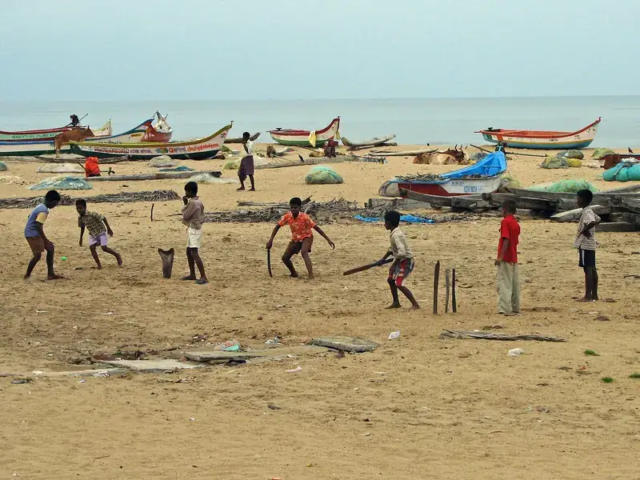
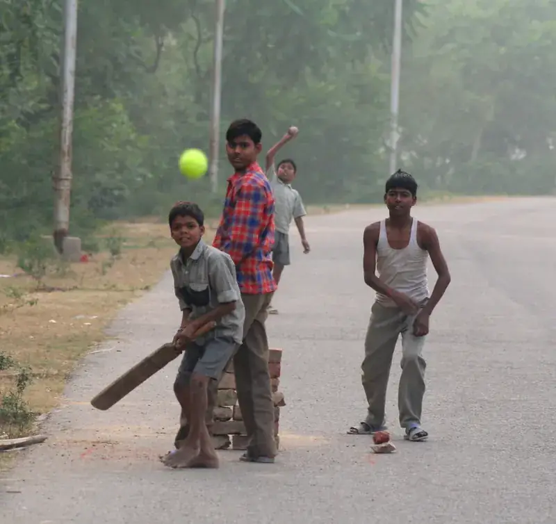
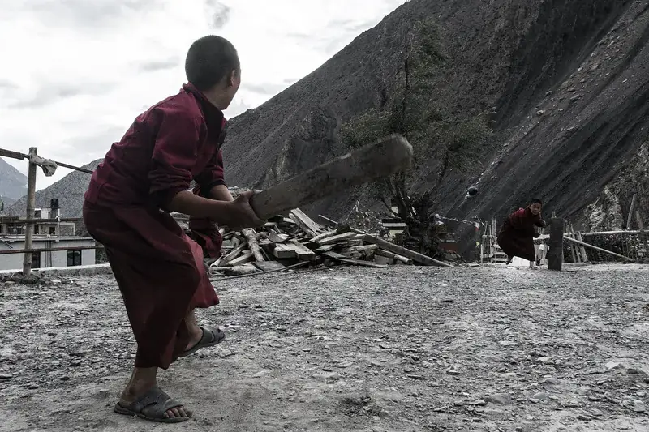
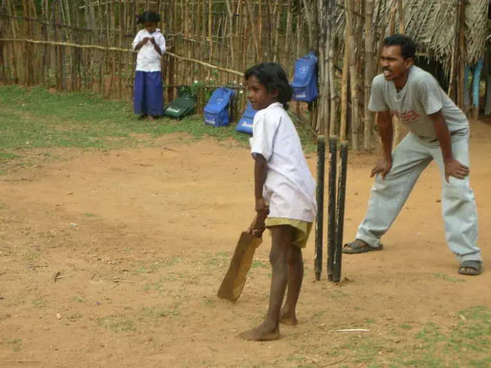
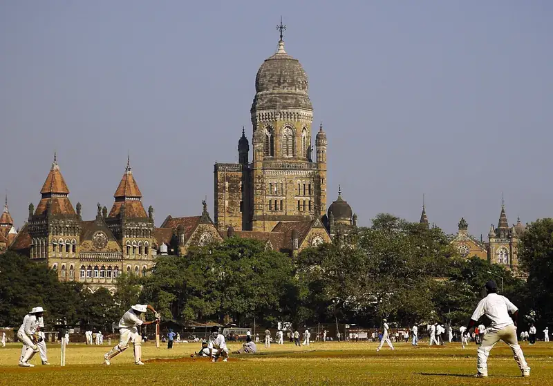
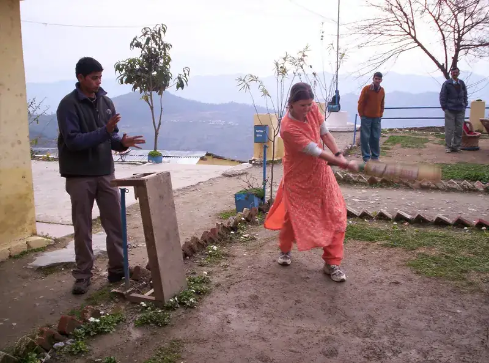
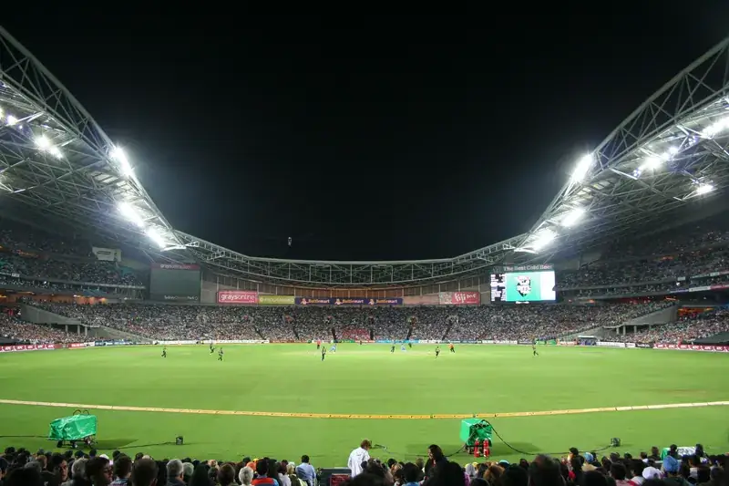
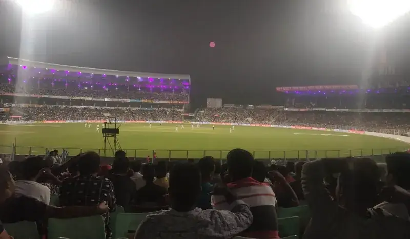

ಪ್ರಕಟಣೆ
ಭಾರತದ ಅತಿದೊಡ್ಡ ಬೀದಿ ಕ್ರಿಕೆಟ್ ಪ್ರತಿಭಾ ಶೋಧ. ನಿಮ್ಮದೇ ಗಲ್ಲಿಯಲ್ಲಿ ಆಡಿ, ತಾಲೂಕಿನಿಂದ ರಾಷ್ಟ್ರೀಯ ಮಟ್ಟಕ್ಕೆ ಏರಿ, ಮತ್ತು Rs 1 ಕೋಟಿ ಅಗ್ರ ಬಹುಮಾನಕ್ಕಾಗಿ ಸ್ಪರ್ಧಿಸಿ. ಮೊದಲ ಸುತ್ತುಗಳು ದೂರದರ್ಶನದಲ್ಲಿ ಪ್ರಸಾರ.
ಇಟ್ಟಿಗೆಯ ಸ್ಟಂಪ್ಗಳು, ಟೇಪ್ ಸುತ್ತಿದ ಟೆನಿಸ್ ಬಾಲ್, ಒನ್-ಟಿಪ್-ಒನ್-ಹ್ಯಾಂಡ್, ಮತ್ತು ಇಡೀ ಓಣಿಯೇ ನೋಡುತ್ತಿರುತ್ತದೆ. ಭಾರತದಲ್ಲಿ ಹೆಚ್ಚಿನವರು ಮೊದಲು ಬ್ಯಾಟ್ ಹಿಡಿಯುವುದು ಗಲ್ಲಿ ಕ್ರಿಕೆಟ್ನಲ್ಲೇ. ಅದಕ್ಕೆ ತನ್ನದೇ ನಿಯಮಗಳು, ತನ್ನದೇ ಹೀರೋಗಳು ಮತ್ತು ತನ್ನದೇ ಕಥೆಗಳಿವೆ.
ಗಲ್ಲಿ ಕ್ರಿಕೆಟ್ ಟ್ರಸ್ಟ್ ಆ ಓಣಿಯ ಪಂದ್ಯಗಳನ್ನು ನಿಜವಾದ ಚಾಂಪಿಯನ್ಶಿಪ್ ಆಗಿಸುತ್ತದೆ: ಸರಿಯಾದ ಅಂಪೈರ್ಗಳು, ನ್ಯಾಯಯುತ ನಿಯಮಗಳು, ಮತ್ತು ನಿಮ್ಮ ತಾಲೂಕಿನಿಂದ ರಾಷ್ಟ್ರೀಯ ಫೈನಲ್ವರೆಗೆ ಒಂದು ದಾರಿ. ನೀವು ಈಗಾಗಲೇ ಆಡುವ ಅದೇ ಆಟ, ಈಗ ಲೆಕ್ಕಕ್ಕೆ ಬರುವ ಸ್ಕೋರ್ಬೋರ್ಡ್ನೊಂದಿಗೆ.

ಆರು ಹಂತಗಳು, ಒಂದೇ ಏಣಿ. ನೀವು ಇರುವಲ್ಲೇ ಗೆಲ್ಲಿ, ಏರುತ್ತಲೇ ಇರಿ.
ತಂಡಗಳು ತಮ್ಮದೇ ಹಳ್ಳಿ ಅಥವಾ ಪಟ್ಟಣದಲ್ಲಿ ಆಡುತ್ತವೆ.
ಪ್ರತಿ ತಾಲೂಕು ವಿಜೇತರಿಗೆ Rs 50,000.ತಾಲೂಕು ಚಾಂಪಿಯನ್ಗಳು ಮುಖಾಮುಖಿಯಾಗುತ್ತಾರೆ.
ಪ್ರತಿ ಜಿಲ್ಲಾ ವಿಜೇತರಿಗೆ Rs 1,00,000.ಪ್ರತಿ ಪ್ರದೇಶದ ಬಲಿಷ್ಠ ತಂಡಗಳು ಸೆಣಸುತ್ತವೆ.
28 ರಾಜ್ಯ ಚಾಂಪಿಯನ್ಗಳ ಪಟ್ಟಾಭಿಷೇಕ.
ಭಾರತದ ಅತ್ಯುತ್ತಮ ತಂಡಗಳು Rs 1 ಕೋಟಿಗಾಗಿ ಆಡುತ್ತವೆ.
Rs 1 ಕೋಟಿಹುಡುಗರು, ಹುಡುಗಿಯರು, ಪುರುಷರು ಮತ್ತು ಮಹಿಳೆಯರು ಪ್ರತಿಯೊಬ್ಬರಿಗೂ 18ರೊಳಗಿನ ಮತ್ತು 25ರವರೆಗಿನ ವಯೋಮಿತಿ ಗುಂಪುಗಳಲ್ಲಿ ಪ್ರತ್ಯೇಕ ಸ್ಪರ್ಧೆ. ಹುಡುಗಿಯರು ಮತ್ತು ಮಹಿಳೆಯರಿಗೆ ಪ್ರತ್ಯೇಕ ಡ್ರಾ, ಪ್ರತ್ಯೇಕ ಟ್ರೋಫಿ ಮತ್ತು ಪ್ರತ್ಯೇಕ ಬಹುಮಾನ ಮೊತ್ತ.




ಚಾಂಪಿಯನ್ಶಿಪ್ ಪುಟದಲ್ಲಿರುವ ಪೂರ್ಣ ನಿಯಮಗಳ ಸಂಕ್ಷಿಪ್ತ ರೂಪ.
ಪೂರ್ಣ ನಿಯಮಗಳನ್ನು ಓದಿಭಾರತೀಯ ನಿವಾಸಿಗಳಿಗೆ ಮುಕ್ತ, ಅವರದೇ ವಿಭಾಗದಲ್ಲಿ: ಹುಡುಗರು, ಹುಡುಗಿಯರು, ಪುರುಷರು ಅಥವಾ ಮಹಿಳೆಯರು.
18ರೊಳಗೆ: ಪ್ರತಿ ಆಟಗಾರರು 18ಕ್ಕಿಂತ ಕಡಿಮೆ. 25ರವರೆಗೆ: ಪ್ರತಿ ಆಟಗಾರರು 25 ಅಥವಾ ಕಡಿಮೆ. ಕಟ್-ಆಫ್ ದಿನಾಂಕವನ್ನು ಸೀಸನ್ 1 ವೇಳಾಪಟ್ಟಿಯೊಂದಿಗೆ ಪ್ರಕಟಿಸಲಾಗುತ್ತದೆ.
ಪ್ರತಿ ವಿಭಾಗದಲ್ಲಿ ಒಬ್ಬ ಆಟಗಾರನಿಗೆ ಒಂದೇ ತಂಡ; ತಂಡಗಳು ತಾವು ನೋಂದಾಯಿಸಿದ ತಾಲೂಕಿಗೆ ಆಡುತ್ತವೆ.
ಪ್ರತಿ ಪಂದ್ಯಕ್ಕೂ ವಯಸ್ಸಿನ ಪುರಾವೆ (ಆಧಾರ್, ಶಾಲಾ ಗುರುತಿನ ಚೀಟಿ ಅಥವಾ ಜನನ ಪ್ರಮಾಣಪತ್ರ) ತನ್ನಿ.
ಮದ್ಯ, ತಂಬಾಕು ಅಥವಾ ಮಾದಕ ವಸ್ತುಗಳಿಗೆ ಅವಕಾಶವಿಲ್ಲ. ವಯೋಮಿತಿ ಮೀರಿದ ಆಟಗಾರರಿದ್ದರೆ ಇಡೀ ತಂಡ ಅನರ್ಹ.
ರಾಷ್ಟ್ರೀಯ ಚಾಂಪಿಯನ್ಗಳಿಗೆ Rs 1,00,00,000, ರನ್ನರ್ಸ್-ಅಪ್ಗೆ Rs 75 ಲಕ್ಷ, ಮೂರನೇ ಸ್ಥಾನಕ್ಕೆ Rs 50 ಲಕ್ಷ ಮತ್ತು ನಾಲ್ಕನೇ ಸ್ಥಾನಕ್ಕೆ Rs 25 ಲಕ್ಷ.

ಸರ್ ಎಂ. ವಿಶ್ವೇಶ್ವರಯ್ಯನವರು ಕರ್ನಾಟಕದ ಒಂದು ಹಳ್ಳಿಯಲ್ಲಿ ಬೆಳೆದು, ನಗರಗಳಿಂದ ದೂರದ ಜನರ ಬದುಕನ್ನೇ ಬದಲಿಸಿದ ಅಣೆಕಟ್ಟೆಗಳು, ಶಾಲೆಗಳು ಮತ್ತು ಕಾಲೇಜುಗಳನ್ನು ಕಟ್ಟಿದರು. ಶಿಸ್ತು ಮತ್ತು ಪರಿಶ್ರಮವನ್ನು ತಾಳ್ಮೆಯಿಂದ ಅಳವಡಿಸಿದರೆ ಇಡೀ ಸಮುದಾಯವೇ ಮೇಲೇರುತ್ತದೆ ಎಂದು ಅವರು ನಂಬಿದ್ದರು. ನಾವು ನಮಗೆ ಇಟ್ಟುಕೊಂಡಿರುವ ಮಾನದಂಡ ಇದೇ: ಸಣ್ಣ ಹಳ್ಳಿಯ ಮಗುವಿಗೆ ಗುರುತಿಸಿಕೊಳ್ಳುವ ನಿಜವಾದ ಅವಕಾಶ ಸಿಕ್ಕಾಗ ಮಾತ್ರ ಒಂದು ಪಂದ್ಯಾವಳಿ ನಡೆಸುವುದು ಸಾರ್ಥಕ. ಕಾರ್ಯಕ್ರಮ ಎಷ್ಟು ದೊಡ್ಡದಾಗಿ ಕಂಡಿತು ಎನ್ನುವುದಲ್ಲ, ಎಷ್ಟು ಆಟಗಾರರನ್ನು ಮೇಲೆತ್ತಿದೆವು ಎನ್ನುವುದೇ ಅಳತೆ ಎಂದು ನೆನಪಿಸಿಕೊಳ್ಳಲು ಅವರ ಭಾವಚಿತ್ರವನ್ನು ನಮ್ಮ ಗೋಡೆಯ ಮೇಲೆ ಇರಿಸಿದ್ದೇವೆ.
ಮೊದಲ ಸುತ್ತುಗಳು ಮಾತೃ ಸ್ಮೃತಿ ಮೀಡಿಯಾ ಪ್ರೈ. ಲಿ. ಅವರ 24/7 ವಾಹಿನಿ MSM TV News ನಲ್ಲಿ ಪ್ರಸಾರವಾಗಲಿವೆ.

ನೇರ ಪ್ರಸಾರ


ಸೀಸನ್ 1ರ ನೋಂದಣಿ ಶೀಘ್ರದಲ್ಲೇ ಆರಂಭ. ನಿಮ್ಮ ತಂಡವನ್ನು ಒಟ್ಟುಗೂಡಿಸಿ, ನಿಮ್ಮ ತಾಲೂಕಿನಲ್ಲಿ ಮೊದಲಿಗರಾಗಿ.